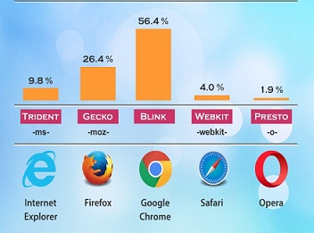

Trafik på Internet och Webbläsare
Trafik på internet
webbläsare
Webbläsaren fungerar som ett fönster som visar olika webbplatser där det
finns information. we skriver en webbadress i webbläsaren så kommer we
direkt till den webbplatsen. Webbläsare har 3 viktiga uppgifter:
1.väntar på input 2.hämta resurser 3.randera en webbsia
I bilden
nedan visas de populäraste webbläsare med deras webbmotor och de
prefexen som hjälper till att webbläsare ska kunna våra koder( Det är
viktigt när vi arbetar med css3.)
